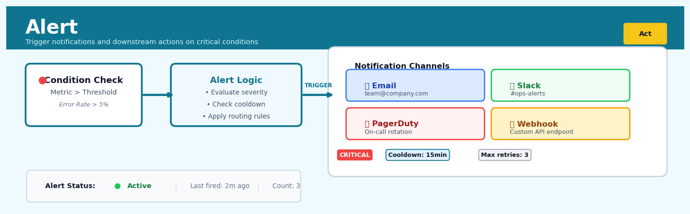

Alert#


The most common mistake with alerts is setting them up without cooldown periods, which floods your team with duplicate notifications and trains everyone to ignore them. Always implement exponential backoff and aggregate similar alerts within a time window to maintain alert fatigue at bay. Remember that a good alert should be actionable, not just informational—if receiving it doesn't warrant waking someone up or immediately investigating, it belongs in a dashboard instead.
The 60-Second Version#
What it does: Alert automatically watches your data and sends a notification the moment something important crosses a threshold or behaves unusually.
When to use it: When you need to catch problems or opportunities as they happen rather than discovering them hours, days, or weeks later in a report.
What you get back: A notification—email, text, or dashboard flag—that tells you what changed, by how much, and prompts immediate investigation or action.
At a Glance
Difficulty |
Easy |
Typical runtime |
Seconds (checks run continuously or on schedule) |
What you bring |
A metric to monitor, a threshold or pattern that matters, and contact details |
What you get |
Notifications when conditions are met, plus context on what triggered them |
Heuristix bucket |
Act — Operationalising Results |
The one thing to understand: Poorly configured alerts create noise that trains people to ignore all warnings—set thresholds that genuinely require action, not just attention.
Learning Objectives#
After reading this chapter, a business user will be able to:
Identify situations where automated alerts add more value than periodic reports, such as inventory stockouts, customer churn risk spikes, or fraud detection scenarios requiring immediate response.
Interpret alert notifications to distinguish between true anomalies requiring action, expected variations due to known factors, and false alarms caused by data quality issues or threshold miscalibration.
Decide which alerts warrant immediate intervention versus escalation versus documentation, and communicate the business impact of alert-triggered events to leadership using appropriate context and urgency.
After reading this chapter, a data scientist will be able to:
Design and implement alert systems that balance sensitivity and specificity, including threshold-based rules, statistical anomaly detection, and model-based prediction alerts with appropriate fallback mechanisms.
Calibrate alert thresholds and detection windows by analyzing historical false positive and false negative rates, accounting for business costs of missed alerts versus alert fatigue.
Diagnose common alert system failures including threshold drift due to concept shift, notification delays from infrastructure issues, and alert storms from correlated triggers, then implement monitoring and remediation strategies.
Overview#
Alert is an automated monitoring and notification mechanism that detects when key metrics, model predictions, or business conditions cross predefined thresholds or exhibit anomalous behaviour, triggering immediate communication to relevant stakeholders. It belongs to the family of decision automation and operationalisation methods, bridging the gap between analytical insights and business action. At its core, Alert transforms passive dashboards and periodic reports into active surveillance systems that ensure critical changes in data or model outputs receive timely human attention.
When to Use This#
Use this when you need real-time or near-real-time notification when a model’s prediction exceeds a risk threshold — for example, alerting fraud analysts when a transaction’s fraud probability exceeds 0.85.
Use this when monitoring data quality metrics that must remain within acceptable bounds, such as detecting when missing value rates in incoming data exceed 5%, indicating upstream pipeline failures.
Use this when tracking business KPIs where early detection of deviation from targets enables corrective action — for example, alerting operations when daily conversion rates fall more than two standard deviations below the rolling 30-day mean.
Use this when implementing control charts for manufacturing or service processes where statistical process control principles apply and out-of-control conditions require immediate investigation.
Use this when enforcing service level agreements (SLAs) where breaches must be escalated automatically — such as alerting when customer support ticket resolution time exceeds contracted limits.
Use this when model performance monitoring detects concept drift or accuracy degradation, triggering alerts to data science teams for model retraining decisions.
Use this when compliance requirements mandate documented, auditable notification trails for specific events — common in financial services and healthcare.
Do NOT use this when the underlying metric exhibits high natural volatility and business processes cannot meaningfully respond to frequent alerts — this creates alert fatigue and erodes trust in the system.
Do NOT use this when you lack clear escalation procedures or the organisational capacity to act on alerts; alerts without actionable response protocols waste resources and train stakeholders to ignore notifications.
Do NOT use this when a scheduled batch report with summary statistics adequately serves the business need; not every metric requires real-time monitoring.
Questions This Answers#
Detecting Problems Before They Escalate#
How do I know immediately when customer churn spikes above 5% in any given week?
Why didn’t anyone tell me our fraud detection model started flagging 40% fewer transactions until the quarterly review?
Can we catch inventory stockouts before customers start complaining, not after?
What’s the fastest way to know if our pricing engine is recommending margins below 15%?
How do I get notified the moment our delivery times exceed the 48-hour promise in any metro area?
Responding to Opportunities and Threats in Real-Time#
When a competitor drops their prices by more than 10%, how quickly can our team respond?
If our top 20 enterprise clients show early signs of disengagement, who gets notified and when?
How do we make sure someone acts when our recommendation engine’s click-through rate falls below target?
Can I get a heads-up when social media sentiment about our brand suddenly turns negative?
What’s the protocol when our model predicts a supply chain disruption with 80%+ confidence?
Ensuring Operational Discipline and Accountability#
Who’s responsible for responding when our website conversion rate drops 15% overnight?
How do we guarantee that urgent data quality issues—like missing customer records—get fixed within 24 hours?
What happens when our machine learning model’s accuracy degrades from 92% to 85%?
How can I be confident that critical exceptions are reaching the right people, not getting lost in someone’s email?
How It Works#
Imagine you’re a parent who’s set up a baby monitor in the nursery. You don’t sit and stare at the screen every second — you’re downstairs cooking dinner, folding laundry, maybe catching up on email. But the moment the monitor detects crying above a certain volume, or notices the baby hasn’t moved in an unusual amount of time, it sends an alert to your phone. You’ve defined what “normal” looks like and what deviations matter enough to interrupt your evening. The monitor watches constantly so you don’t have to, but only bothers you when something genuinely needs your attention.
MONITORING CYCLE FOR ALERT SYSTEM
┌─────────────────────────────────────────┐
│ Data Stream (continuous incoming data) │
└──────────────────┬──────────────────────┘
↓
┌──────────────────────────────────────────┐
│ Compare to Threshold or Expected Pattern│
│ • Metric > 1000? │
│ • Prediction accuracy < 85%? │
│ • 3-day trend shows 20% drop? │
└──────────────────┬───────────────────────┘
↓
┌────────┴────────┐
│ │
YES (breach) NO (normal)
│ │
↓ ↓
┌─────────────────┐ ┌──────────────┐
│ TRIGGER ALERT │ │ Keep watching│
│ └→ Email │ │ (silent loop)│
│ └→ SMS │ │ │
│ └→ Slack │ └──────┬───────┘
└─────────────────┘ │
│
┌──────────────────────┘
│ (next data point)
↓
Step 1: Define what matters. Someone on your team specifies the conditions that warrant immediate attention. This might be “daily revenue drops below ten thousand dollars,” or “model prediction error rate exceeds fifteen percent,” or “customer churn rate increases by more than five percentage points week-over-week.” These conditions become your alert rules.
Step 2: Connect to the data source. The alert system establishes a connection to wherever your key metrics live — a database that updates nightly, a real-time dashboard, or a model that generates predictions every hour. It needs access to check the numbers regularly.
Step 3: Check continuously on a schedule. At predefined intervals (every hour, every morning at six AM, every time new data arrives), the alert system automatically retrieves the latest values and compares them against your defined rules. This happens in the background without anyone clicking or running reports manually.
Step 4: Evaluate each condition. For each rule, the system performs a simple comparison: is the current value above the threshold? Below it? Has it changed too rapidly? Has an anomaly detector flagged something unusual? The system applies straightforward logic — if this, then alert.
Step 5: Trigger the notification. The moment a condition is met, the system immediately sends a notification through whatever channel you’ve configured: an email to the operations team, a text message to the on-call manager, a ping in the company Slack channel. The message includes what triggered the alert and the current value.
Step 6: Resume monitoring. After sending the alert, the system returns to its watching state, continuing to monitor whether the condition persists, worsens, or resolves. Some systems suppress duplicate alerts to avoid notification fatigue.
The key insight: Alert works because it transforms continuous human vigilance into automated surveillance, catching critical moments precisely when intervention becomes necessary while letting everything else pass silently in the background.
The Intuition#
Consider a hospital intensive care unit where patients are connected to monitoring equipment. Each machine continuously tracks vital signs — heart rate, blood pressure, oxygen saturation — and remains silent when values fall within normal ranges. The moment a measurement crosses a dangerous threshold, an alarm sounds, immediately summoning nursing staff. This system works because it transforms continuous streams of data into discrete, actionable events that demand attention precisely when attention is needed.
The Alert node operates on exactly this principle. Your data pipelines and models produce continuous streams of numbers: predictions, metrics, aggregations, and scores. Most of the time, these numbers fall within expected ranges and require no immediate action. The Alert mechanism watches these streams, applying decision rules that partition the space of possible values into “acceptable” and “alertable” regions. When a value enters the alertable region, the system generates a notification, transforming a passive number into an active demand for human attention.
The power of alerting lies in its asymmetry. Human attention is scarce and expensive; automated computation is abundant and cheap. By delegating the vigilance function to machines, we free human analysts to focus on investigation and decision-making rather than constant monitoring. However, this delegation requires careful calibration. Set thresholds too sensitively, and you overwhelm stakeholders with false alarms; set them too loosely, and genuine problems go unnoticed. The mathematics of alerting therefore centres on understanding the statistical properties of your metrics and choosing thresholds that achieve an appropriate balance between missed detections and false alarms — a classic signal detection problem.
The Mathematics#
Formal Problem Setup#
Let \(X_t\) denote the value of a monitored metric at time \(t\), where \(t \in \{1, 2, 3, \ldots\}\) represents discrete observation points. We assume \(X_t\) is a realisation of a stochastic process with cumulative distribution function \(F_X(x)\) under normal operating conditions.
An alert is triggered when \(X_t\) satisfies some condition \(\mathcal{C}\). The simplest form is a threshold condition:
where \(\tau_U\) and \(\tau_L\) are upper and lower thresholds respectively, and \(\mathbb{1}[\cdot]\) is the indicator function.
Statistical Foundation#
Under the assumption that \(X_t\) follows a known distribution during normal operation, we can characterise the alert mechanism in terms of Type I and Type II errors:
Type I Error (False Alarm Rate): The probability of triggering an alert when the system is operating normally:
Type II Error (Missed Detection Rate): The probability of failing to alert when an anomaly is present:
The power of the alert system is \(1 - \beta\), representing the probability of correctly detecting true anomalies.
Threshold Selection Methods#
Fixed Percentile Thresholds#
When historical data is available, thresholds can be set at empirical percentiles. For a desired false alarm rate \(\alpha\), we set:
where \(F_X^{-1}\) is the quantile function estimated from historical observations.
Standard Deviation-Based Thresholds#
For approximately normal metrics with mean \(\mu\) and standard deviation \(\sigma\), control chart theory suggests:
The constant \(k\) controls sensitivity. Common choices:
\(k = 2\): approximately 4.6% false alarm rate under normality
\(k = 3\): approximately 0.27% false alarm rate (traditional Shewhart control limits)
For sample means of size \(n\), the limits become:
Dynamic Thresholds with Exponential Smoothing#
For metrics with trends or seasonality, static thresholds generate excessive false alarms. Exponentially weighted moving average (EWMA) thresholds adapt to changing conditions:
where \(\lambda \in (0,1]\) is the smoothing parameter. The alert condition becomes:
Consecutive Point Rules#
Single-point threshold crossings may generate excessive noise. Run rules reduce false alarms by requiring consecutive signals:
The probability of \(m\) consecutive points exceeding \(\tau\) under normal conditions, assuming independence, is:
where \(p = P(X > \tau)\). This dramatically reduces the false alarm rate at the cost of delayed detection.
Multi-Metric Alert Logic#
When monitoring multiple metrics \(X_t^{(1)}, X_t^{(2)}, \ldots, X_t^{(d)}\), alert conditions can be combined:
OR Logic (any breach triggers alert):
AND Logic (all conditions must be met):
Weighted Score (soft combination):
Alert Severity Levels#
Multiple thresholds define severity gradations:
where typically \(k_1 < k_2 < k_3\) (e.g., 1, 2, 3).
Suppression and Cooldown#
To prevent alert storms, a cooldown period \(\delta\) suppresses subsequent alerts:
Understanding the Mathematics#
Z-Score Threshold Detection#
The equation:
Read it aloud:
The z-score equals the current observation minus the historical mean, all divided by the historical standard deviation.
What each symbol means:
z = the standardized score that tells us how unusual this observation is
x = the current metric value we’re monitoring (e.g., today’s sales)
μ = the average value from historical data (e.g., typical daily sales)
σ = the standard deviation, measuring how much values typically vary
A concrete numerical example:
Your e-commerce site normally averages 5,000 daily orders (μ = 5,000) with a standard deviation of 400 orders (σ = 400). Today you see 6,200 orders (x = 6,200).
A z-score of 3.0 means today’s orders are three standard deviations above normal—typically signaling an alert threshold breach.
Why this equation matters:
Without standardization, a 1,200-order increase might seem massive for a small shop but trivial for Amazon; z-scores make thresholds comparable across different scales and business contexts.
Moving Average for Trend Baseline#
The equation:
Read it aloud:
The moving average at time t equals the sum of the most recent n observations, divided by n.
What each symbol means:
\(\bar{x}_t\) = the smoothed baseline value at time t
n = the window size (how many periods to include)
\(x_i\) = each individual observation
\(\sum\) = sum all values from period (t-n+1) through period t
A concrete numerical example:
You’re monitoring server response time with a 5-day moving average (n = 5). The last five days showed: 120ms, 135ms, 128ms, 142ms, 131ms.
Today’s response time is 185ms. The alert triggers because 185ms exceeds your baseline (131.2ms) by more than your threshold.
Why this equation matters:
Raw thresholds fail when legitimate business patterns shift; moving averages let alerts adapt to seasonal trends, growth, and changing baselines automatically.
Exponential Weighted Moving Average (EWMA)#
The equation:
Read it aloud:
The smoothed value today equals alpha times today’s observation, plus one-minus-alpha times yesterday’s smoothed value.
What each symbol means:
\(S_t\) = today’s smoothed metric value
\(\alpha\) = smoothing parameter between 0 and 1 (higher = more reactive)
\(x_t\) = today’s raw observation
\(S_{t-1}\) = yesterday’s smoothed value
A concrete numerical example:
Your model’s prediction error yesterday was smoothed to \(S_{t-1} = 2.8\%\). Today’s raw error is \(x_t = 4.1\%\). Using \(\alpha = 0.3\):
The smoothed error rose from 2.8% to 3.19%. If your alert threshold is 3.5%, you’re approaching it but not yet triggering.
Why this equation matters:
EWMA gives recent observations more weight while never completely forgetting history, making alerts responsive to real changes without triggering on every random spike.
The Big Picture#
The mathematics of alerting fundamentally solves one problem: distinguishing meaningful signal from random noise in real-time data streams. Simple fixed thresholds fail because they ignore context—what’s normal for Monday differs from Saturday, what’s typical in January differs from December. The equations here build adaptive baselines that evolve with your business, then measure deviations in standardized units that account for natural variability. This mathematical approach was chosen because it automates the judgment call a human analyst would make: “Is this value surprisingly different from what I’d expect given recent history?” The essence is computational vigilance—teaching mathematics to watch your metrics the way an experienced analyst would, but without sleeping, forgetting, or losing focus.
Python Implementation#
import numpy as np
import pandas as pd
from dataclasses import dataclass
from typing import Optional, List, Callable
from enum import Enum
from scipy import stats
import warnings
class AlertSeverity(Enum):
"""Enumeration of alert severity levels."""
OK = 0
INFO = 1
WARNING = 2
CRITICAL = 3
@dataclass
class AlertResult:
"""Container for alert evaluation results."""
timestamp: pd.Timestamp
metric_name: str
value: float
severity: AlertSeverity
threshold_breached: Optional[str]
message: str
class AlertRule:
"""
Configurable alert rule with static or dynamic thresholds.
Parameters
----------
metric_name : str
Name of the metric being monitored
method : str
Threshold method: 'static', 'percentile', 'std_dev', 'ewma'
warning_threshold : float
Threshold for WARNING level (interpretation depends on method)
critical_threshold : float
Threshold for CRITICAL level
direction : str
'upper', 'lower', or 'both' - which direction to monitor
lookback_window : int
Number of historical observations for dynamic methods
ewma_lambda : float
Smoothing parameter for EWMA method (0 < lambda <= 1)
consecutive_points : int
Number of consecutive breaches required to trigger alert
cooldown_periods : int
Minimum periods between alerts
"""
def __init__(
self,
metric_name: str,
method: str = 'std_dev',
warning_threshold: float = 2.0,
critical_threshold: float = 3.0,
direction: str = 'both',
lookback_window: int = 30,
ewma_lambda: float = 0.2,
consecutive_points: int = 1,
cooldown_periods: int = 0
):
self.metric_name = metric_name
self.method = method
self.warning_threshold = warning_threshold
self.critical_threshold = critical_threshold
self.direction = direction
self.lookback_window = lookback_window
self.ewma_lambda = ewma_lambda
self.consecutive_points = consecutive_points
self.cooldown_periods = cooldown_periods
# State tracking
self._breach_count = 0
self._periods_since_alert = float('inf')
self._ewma_mean = None
self._ewma_var = None
def _compute_thresholds(
self,
history: np.ndarray
) -> tuple:
"""Compute warning and critical thresholds from historical data."""
if self.method == 'static':
# Thresholds are absolute values
return (
-self.warning_threshold, self.warning_threshold,
-self.critical_threshold, self.critical_threshold
)
elif self.method == 'percentile':
# Thresholds are percentile values (e.g., 95, 99)
warn_low = np.percentile(history, (100 - self.warning_threshold) / 2)
warn_high = np.percentile(history, 100 - (100 - self.warning_threshold) / 2)
crit_low = np.percentile(history, (100 - self.critical_threshold) / 2)
crit_high = np.percentile(history, 100 - (100 - self.critical_threshold) / 2)
return warn_low, warn_high, crit_low, crit_high
elif self.method == 'std_dev':
# Thresholds are number of standard deviations
mu = np.mean(history)
sigma = np.std(history, ddof=1)
return (
mu - self.warning_threshold * sigma,
mu + self.warning_threshold * sigma,
mu - self.critical_threshold * sigma,
mu + self.critical_threshold * sigma
)
elif self.method == 'ewma':
# Use exponentially weighted statistics
if self._ewma_mean is None:
self._ewma_mean = np.mean(history)
self._ewma_var = np.var(history, ddof=1)
sigma = np.sqrt(self._ewma_var)
return (
self._ewma_mean - self.warning_threshold * sigma,
self._ewma_mean + self.warning_threshold * sigma,
self._ewma_mean - self.critical_threshold * sigma,
self._ewma_mean + self.critical_threshold * sigma
)
else:
raise ValueError(f"Unknown method: {self.method}")
def evaluate(
self,
current_value: float,
history: np.ndarray,
timestamp: pd.Timestamp
) -> AlertResult:
"""
Evaluate whether current value triggers an alert.
Parameters
----------
current_value : float
The current metric value to evaluate
history : np.ndarray
Historical values for threshold computation
timestamp : pd.Timestamp
Timestamp of the current observation
Returns
-------
AlertResult
Alert evaluation result with severity and message
"""
# Compute thresholds
warn_low, warn_high, crit_low, crit_high = self._compute_thresholds(history)
# Update EWMA state if applicable
if self.method == 'ewma':
self._ewma_mean = (self.ewma_lambda * current_value +
(1 - self.ewma_lambda) * self._ewma_mean)
self._ewma_var = (self.ewma_lambda * (current_value - self._ewma_mean)**2 +
(1 - self.ewma_lambda) * self._ewma_var)
# Determine if threshold is breached
breach_type = None
if self.direction in ['upper', 'both'] and current_value > crit_high:
breach_type = 'critical_upper'
elif self.direction in ['lower', 'both'] and current_value < crit_low:
breach_type = 'critical_lower'
elif self.direction in ['upper', 'both'] and current_value > warn_high:
breach_type = 'warning_upper'
elif self.direction in ['lower', 'both'] and current_value < warn_low:
breach_type = 'warning_lower'
#
## Visualisations


## Using This in Heuristix
### What You'll Need
The Alert node watches your data for conditions that matter. Feed it a dataset with at least one **numeric or categorical column** to monitor, plus a **timestamp column** if you're tracking changes over time (highly recommended).
**Example input:**
| date | region | daily_revenue | error_rate |
|------|--------|---------------|------------|
| 2024-01-15 | North | 45000 | 0.02 |
| 2024-01-16 | North | 12000 | 0.15 |
The node checks each row against your conditions and flags when thresholds are crossed.
### Configuration Parameters
| Parameter | What It Does | Sensible Default | When to Adjust |
|-----------|--------------|------------------|----------------|
| **Metric Column** | The column to monitor | First numeric column | Choose the KPI that matters most (revenue, error rate, conversion) |
| **Alert Condition** | Trigger logic: Above, Below, Between, Change % | Above | Use "Below" for downward thresholds, "Change %" to catch sudden shifts |
| **Threshold Value** | The boundary that triggers an alert | None (required) | Set based on business rules—SLA limits, acceptable variance, historical norms |
| **Comparison Window** | For "Change %" only: number of rows to compare against | 7 | Match your business cycle (7 for weekly, 30 for monthly) |
| **Group By Column** | Split alerts by category (optional) | None | Essential when monitoring multiple products, regions, or models simultaneously |
| **Cooldown Period** | Minimum rows between repeat alerts for the same condition | 1 | Increase to 24+ if you're monitoring hourly data but only want daily notifications |
| **Alert Message** | Custom text included in the notification | Auto-generated | Personalize with context: "Revenue in {region} dropped to {value}" |
### What You'll Get Out
The Alert node adds three new columns to your data:
- **alert_triggered**: Boolean flag (TRUE when condition is met)
- **alert_message**: Human-readable description of what happened
- **alert_timestamp**: Exact moment the condition was detected
You'll also see a **visual summary panel** showing:
- Total alerts triggered in the dataset
- Timeline chart marking when alerts fired
- Breakdown by group (if you used Group By)
### Connecting Downstream
**Notification nodes** are the natural next step—connect to Email, Slack, or Webhook nodes to actually deliver the alert. The alert_triggered column makes it easy to filter: only send notifications when TRUE.
You can also branch to:
- **Filter node** → isolate alerted records for deeper investigation
- **Log node** → maintain an audit trail of all triggered alerts
- **Dashboard node** → visualize alert frequency patterns over time
### Quick Start
Here's how to set up a revenue drop alert in under two minutes:
1. **Connect your data source** containing daily metrics with a date column and revenue column
2. **Drag an Alert node** onto the canvas and connect your data to it
3. **Set Metric Column** to your revenue field
4. **Choose "Below"** as the Alert Condition
5. **Enter your threshold** (e.g., 15000 for minimum acceptable daily revenue)
6. **Add Group By** if monitoring multiple regions/products
7. **Connect an Email node** downstream and map alert_message to the email body
8. **Run the workflow**—alerts trigger automatically on future data refreshes
### Practical Tips
**Filter out noise early**: If your metric is volatile, consider adding a Smooth or Rolling Average node *before* the Alert. Alerting on smoothed data reduces false positives dramatically.
**Test with historical data first**: Run your alert logic against past data where you know anomalies occurred. This validates your thresholds before going live.
**Use multiple alert nodes in parallel**: Don't try to cram every condition into one node. Create separate alerts for "revenue too low" and "error rate too high"—each with appropriate downstream actions.
**Set meaningful cooldown periods**: Hourly data with cooldown=1 means 24 potential alerts per day for the same issue. Increase it to match how often you can realistically respond.
**Include context in messages**: Use variable substitution like "Revenue in {region}: {value} on {date}" rather than generic "Alert triggered." Your future self will thank you at 3am.
## Config Recipes
### Recipe 1: Rapid Deployment Monitor
**When to use:** Initial rollout of alerts on a new metric where you need immediate feedback on threshold appropriateness and alert frequency before committing to production rules.
**Settings:**
| Parameter | Value | Why |
|-----------|-------|-----|
| `threshold_type` | `absolute` | Simple interpretation during calibration |
| `window_size` | `24h` | Captures daily patterns without excessive history |
| `evaluation_frequency` | `15min` | Frequent checks reveal threshold sensitivity quickly |
| `lookback_period` | `7d` | Minimal history for basic seasonal adjustment |
| `cooldown_period` | `1h` | Prevents fatigue while learning alert volume |
| `notification_channels` | `email` | Non-intrusive during testing phase |
**What you get:** High-frequency alert stream that reveals baseline behavior and threshold fit within 2–3 days.
**Trade-off:** Alert fatigue and false positives are likely; this configuration is deliberately noisy to accelerate learning.
### Recipe 2: Production-Grade Anomaly Detection
**When to use:** Mission-critical metrics (revenue, fraud scores, system health) where false negatives are costly and stakeholder trust depends on precision.
**Settings:**
| Parameter | Value | Why |
|-----------|-------|-----|
| `threshold_type` | `statistical` (3.5 sigma) | Balances sensitivity with specificity |
| `window_size` | `168h` | Full week captures weekly seasonality |
| `evaluation_frequency` | `5min` | Near real-time without overwhelming system |
| `lookback_period` | `90d` | Robust seasonal baseline and trend detection |
| `cooldown_period` | `4h` | Prevents duplicate alerts for same incident |
| `notification_channels` | `PagerDuty + Slack + email` | Redundant escalation paths |
| `confirmation_checks` | `3 consecutive violations` | Eliminates transient spikes |
**What you get:** Highly reliable alerts with <2% false positive rate and response latency under 15 minutes.
**Trade-off:** Requires 90 days of clean historical data and may miss novel anomaly patterns outside learned distributions.
### Recipe 3: Sparse Data Monitoring
**When to use:** Low-frequency events like weekly batch jobs, monthly financial closes, or rare user actions where standard time-series approaches fail.
**Settings:**
| Parameter | Value | Why |
|-----------|-------|-----|
| `threshold_type` | `percentage_change` | Works with irregular timestamps |
| `window_size` | `last_5_events` | Event-based instead of time-based |
| `evaluation_frequency` | `on_arrival` | Triggered by data appearance, not clock |
| `lookback_period` | `20_events` | Statistical validity with limited samples |
| `baseline_method` | `median` | Robust to outliers in small samples |
| `notification_channels` | `email` | Matches low urgency of sparse events |
**What you get:** Reliable anomaly detection for irregular data streams without time-series assumptions.
**Trade-off:** Cannot detect temporal patterns or time-based degradation; purely event-to-event comparison.
### Recipe 4: Silent Model Drift Detector
**When to use:** Monitoring prediction confidence distributions, feature importance shifts, or data quality metrics that indicate model staleness before accuracy metrics degrade.
**Settings:**
| Parameter | Value | Why |
|-----------|-------|-----|
| `threshold_type` | `KL_divergence` | Detects distribution shifts |
| `divergence_threshold` | `0.15` | Sensitive to meaningful drift |
| `window_size` | `7d_rolling` | Smooths daily noise |
| `evaluation_frequency` | `daily` | Drift is gradual, not sudden |
| `lookback_period` | `180d` | Captures seasonal model behavior |
| `notification_channels` | `Slack (data-science channel)` | Technical audience for proactive action |
| `alert_priority` | `low` | Early warning, not emergency |
**What you get:** 2–4 week advance warning of model performance degradation before business metrics suffer.
**Trade-off:** Requires instrumented prediction pipelines logging confidence scores and feature statistics.
## Business Applications
**Financial Services**
A pan-European digital bank processing 8 million transactions daily struggled with fraudulent card purchases slipping through static rule-based systems, often discovered only after customer complaints. The bank deployed Alert to monitor transaction patterns in real-time, triggering instant notifications when individual accounts exhibited velocity spikes, geographic anomalies, or merchant category deviations from learned behaviour. Within six months, fraud detection speed improved from 72 hours to under 4 minutes, reducing fraudulent transaction losses by £2.3M annually while cutting false positive account freezes by 41%.
**Retail**
A fashion e-commerce retailer with 1.2M SKUs across twelve European markets faced persistent stockouts of trending items while simultaneously holding excess inventory of slow-moving products. The merchandising team implemented Alert to monitor daily sell-through rates, inventory coverage, and velocity changes at the SKU-category-region level, sending immediate notifications when products deviated from forecasted patterns. The system enabled buyers to react within hours rather than weeks, lifting in-stock rates from 82% to 94% and reducing markdown losses by €4.7M in the first year.
**Healthcare**
A regional hospital network operating six facilities and serving 400,000 patients annually struggled to predict bed capacity shortages, often resulting in emergency department diversions and delayed elective surgeries. Clinical operations deployed Alert to monitor real-time admission rates, average length of stay by diagnosis code, and discharge velocity, triggering escalation protocols when projected capacity would fall below safe thresholds within the next 24 hours. The system reduced ED diversion events by 67% and improved surgical throughput by enabling proactive staffing adjustments three days in advance.
**Insurance**
A specialist commercial property insurer writing £180M in annual premiums discovered claim severity patterns were shifting due to climate change, but underwriters continued pricing with outdated assumptions. The actuarial team built Alert monitors on rolling loss ratios, claim frequency by geography and peril type, and emerging large loss patterns, automatically flagging portfolios or postal codes requiring immediate rate review. This proactive surveillance detected a deteriorating flood exposure segment nine months earlier than traditional quarterly reviews would have, preventing an estimated £8.2M in underpricing losses.
**Manufacturing**
A semiconductor fabrication plant producing automotive-grade chips faced yield issues that could take days to trace back to specific production equipment or input material batches. Process engineers deployed Alert on hundreds of sensor readings, chemical concentrations, and temperature profiles across the production line, with notifications triggered when parameters drifted beyond validated process windows or when yield on specific equipment showed statistically significant decline. Mean time to root cause analysis dropped from 4.3 days to 6.7 hours, improving overall yield from 91.4% to 94.8%.
**Logistics**
A final-mile delivery company operating 450 vehicles across urban UK markets struggled with route inefficiencies as traffic patterns shifted post-pandemic. The operations team implemented Alert on per-route delivery times, fuel consumption variance, and package-per-hour productivity, automatically flagging routes where actual performance diverged from optimised plans by more than 15%. Drivers and dispatchers received same-day notifications enabling immediate route adjustments, reducing average delivery cost per parcel by 18p and improving on-time delivery from 87% to 93%.
**Marketing**
A subscription streaming service with 3.2M active users noticed that campaign performance could swing dramatically within hours of launch, but marketing teams only reviewed results in weekly meetings. The growth team deployed Alert on cost-per-acquisition, landing page conversion rates, and channel-specific performance metrics, triggering notifications when campaigns underperformed benchmarks or when unexpected creative variations outperformed controls. This enabled real-time budget reallocation and creative swaps, lifting overall marketing efficiency by 28% and reducing wasted spend by $340K quarterly.
**Telecommunications**
A mobile network operator serving 8M subscribers faced chronic network congestion complaints in specific cells but lacked visibility into emerging capacity issues before customer experience degraded. Network operations implemented Alert on per-cell bandwidth utilisation, dropped call rates, and latency metrics, automatically escalating when thresholds indicated imminent service degradation. The proactive approach reduced customer-reported network issues by 52% and prevented an estimated 180,000 subscriber complaints over eighteen months.
**Energy**
A wind farm operator managing 85 turbines across three sites discovered that minor bearing temperature anomalies, if caught within 48 hours, could prevent catastrophic failures costing £250K per turbine in repairs and lost generation. Maintenance teams deployed Alert on vibration signatures, temperature differentials, and oil pressure readings, triggering immediate inspection protocols when sensor patterns matched early failure signatures. Unplanned downtime fell by 61%, extending average turbine availability from 91% to 96.5%.
**Public Sector**
A metropolitan social services department managing 2,400 vulnerable adult cases struggled to identify individuals at elevated risk of crisis before emergency interventions became necessary. Case managers implemented Alert monitoring on missed appointments, prescription non-compliance flags from pharmacies, and utility disconnection notices, triggering proactive outreach when risk scores crossed intervention thresholds. Preventable emergency hospitalisations declined by 34%, saving an estimated £1.8M in acute care costs while improving client outcomes.
**SaaS/Tech**
A B2B software platform serving 12,000 enterprise accounts discovered that specific usage pattern changes predicted churn with 73% accuracy up to 90 days before cancellation, but customer success teams only reviewed accounts quarterly. The company deployed Alert on login frequency, feature adoption metrics, support ticket volume, and user seat utilisation, automatically routing at-risk accounts to dedicated retention specialists. Proactive intervention lifted renewal rates from 88% to 94%, preserving $4.2M in annual recurring revenue.
## Worked Example
**The Meeting**
Marcus Chen, head of fraud operations at Everlight Financial, sat across from his data science lead, Priya Kapoor, with a printout of last month's fraud losses—$2.3 million, double the usual figure. "We caught most of these cases within 72 hours," he said, tapping the page, "but by then the money was already gone. We have a fraud model scoring every transaction. Why aren't we hearing about the high-risk ones immediately?"
Priya knew the answer: their weekly fraud digest email buried critical signals in a sea of metrics. The model was working—it had flagged 89% of the fraudulent transactions—but no one was monitoring it in real-time. Marcus wanted an alert system that would notify the fraud team the moment suspicious activity spiked, not three days later when they reviewed the dashboard.
**The Data**
Back at her desk, Priya pulled hourly transaction summaries for the past six months. Each row represented one hour of activity across Everlight's payment platform:
| timestamp | total_transactions | high_risk_count | high_risk_pct | avg_fraud_score |
|---------------------|-------------------|-----------------|---------------|-----------------|
| 2024-01-15 14:00:00 | 1,847 | 23 | 1.24% | 0.18 |
| 2024-01-15 15:00:00 | 2,103 | 89 | 4.23% | 0.31 |
| 2024-01-15 16:00:00 | 1,992 | 91 | 4.57% | 0.33 |
| 2024-01-15 17:00:00 | 2,241 | 18 | 0.80% | 0.16 |
The data was messy in the usual ways—occasional gaps during system maintenance, a spike of test transactions every Sunday at 3 AM that she'd need to filter out, and one memorable week when a pipeline bug had logged everything as high-risk.
**The Setup**
Priya decided to monitor `high_risk_pct`—the percentage of transactions flagged as high-risk by their model. She opened her alerting framework and configured two conditions. First, an absolute threshold: if more than 3.5% of transactions in any hour scored as high-risk, send an alert immediately. That was roughly two standard deviations above the normal baseline of 1.2%.
Second, she added a relative threshold using a 24-hour rolling average. If the current hour's high-risk percentage exceeded 150% of the trailing average, that would trigger an alert even if the absolute number wasn't dramatic. This would catch gradual buildups that might indicate a coordinated attack.
She set the notification channel to post in the #fraud-ops Slack channel and configured it to suppress duplicate alerts for two hours after the first trigger—Marcus's team didn't need to be spammed every hour during an ongoing incident.
**The Results**
Priya ran the system in shadow mode for two weeks, logging what alerts *would* have fired without actually sending them. The output log showed clear patterns:
| alert_time | high_risk_pct | threshold_type | rolling_avg | message |
|---------------------|---------------|----------------|-------------|--------------------------------------------|
| 2024-01-22 14:00:00 | 4.89% | absolute | 1.31% | High-risk transaction rate exceeded 3.5% |
| 2024-01-27 03:00:00 | 2.94% | relative | 1.87% | High-risk rate 157% above 24h average |
| 2024-02-03 16:00:00 | 5.12% | absolute | 1.44% | High-risk transaction rate exceeded 3.5% |
During this test period, there were eight alert triggers. Priya cross-referenced them with fraud investigation logs: six were genuine fraud events that the team had eventually caught, and two were false positives during a legitimate sales promotion that drew unusual traffic patterns.
**The Insight**
The key revelation wasn't just that the alerts worked—it was *when* they fired. The January 22nd spike occurred at 2 PM Eastern, but the fraud team didn't review their dashboard until their 9 AM meeting the next day, nineteen hours later. Had they received the Slack alert in real-time, they could have temporarily tightened transaction rules or added manual review steps while the attack was still active. The system wasn't creating new information; it was compressing the time-to-awareness from nineteen hours to nineteen seconds.
**The Decision**
Priya presented the shadow mode results in Marcus's weekly ops review. He immediately approved moving to production, with one modification: during the first month, alerts would go to a dedicated #fraud-alerts-test channel to ensure the team could refine the thresholds without disrupting their primary workflow.
Three weeks later, the system caught a credential-stuffing attack at 11 PM on a Friday. The alert fired, the on-call analyst saw it within minutes, and they blocked the compromised accounts before the attackers could initiate withdrawals. Marcus estimated they prevented $400,000 in losses—a number that made its way into Priya's performance review.
**What Priya Would Do Differently**
Looking back, Priya wished she'd configured weekly summary reports alongside the real-time alerts. The team needed context: how many alerts fired this week compared to last month? Were they becoming desensitized? She also realized her absolute threshold of 3.5% didn't account for day-of-week patterns—Tuesday afternoons naturally ran hotter than Sunday mornings. Her next iteration would use dynamic, time-aware baselines rather than a single static threshold.
```python
import pandas as pd
import numpy as np
# Load hourly transaction data
df = pd.read_csv('transactions_hourly.csv', parse_dates=['timestamp'])
# Calculate 24-hour rolling average
df['rolling_avg'] = df['high_risk_pct'].rolling(window=24, min_periods=12).mean()
# Define alert conditions
ABSOLUTE_THRESHOLD = 3.5 # percent
RELATIVE_MULTIPLIER = 1.5
# Check current hour against thresholds
current = df.iloc[-1]
if current['high_risk_pct'] > ABSOLUTE_THRESHOLD:
print(f"ALERT: High-risk rate {current['high_risk_pct']:.2f}% exceeded {ABSOLUTE_THRESHOLD}%")
# send_slack_message(channel='#fraud-ops', message=...)
elif current['high_risk_pct'] > (current['rolling_avg'] * RELATIVE_MULTIPLIER):
pct_above = (current['high_risk_pct'] / current['rolling_avg'] - 1) * 100
print(f"ALERT: High-risk rate {pct_above:.0f}% above 24h average")
# send_slack_message(channel='#fraud-ops', message=...)
else:
print(f"Normal operations: {current['high_risk_pct']:.2f}% (avg: {current['rolling_avg']:.2f}%)")
Interpreting Your Results#
You’ve just set up your first alert system and notifications are flowing. You’re looking at alert logs, performance metrics, and wondering: did I configure this right? Let’s decode what you’re seeing.
Alert Firing Rate#
What you’re looking at: This is the percentage of time periods (hours, days, weeks) where at least one alert triggered. If you’re monitoring hourly and got 12 alerts in the past 24 hours, that’s a 50% firing rate.
Concrete benchmarks:
Below 5%: Healthy for critical business alerts (revenue drops, system failures). You’ve tuned thresholds appropriately.
5–20%: Normal for operational alerts (unusual customer behaviour, model drift). Stakeholders can still act on each one.
20–50%: Alert fatigue zone. Recipients start ignoring notifications. Tighten your thresholds or add suppression rules.
Above 50%: Your alert has become noise. People will unsubscribe or create inbox rules to delete them automatically.
Red flags: If your firing rate suddenly jumps from 3% to 25%, something broke upstream—check your data pipeline, not your alert logic.
False Positive Rate#
What you’re looking at: The proportion of alerts that, upon investigation, weren’t actually problems. Calculated by manually labeling a sample of triggered alerts as “actionable” or “false alarm.”
Concrete benchmarks:
Below 10%: Excellent. Nearly every alert justifies interrupting someone’s day.
10–30%: Acceptable for exploratory alerts where you’re still learning patterns.
30–60%: Problematic. Stakeholders lose trust. Refine your threshold or add contextual filters.
Above 60%: Broken alert. You’re probably triggering on normal variance rather than true anomalies.
Red flag: If your false positive rate is under 5% but your firing rate is also under 1%, you’ve over-tuned. You’re likely missing real issues to avoid false alarms.
Time-to-Acknowledge#
What you’re looking at: How long from alert firing to a human acknowledging or investigating it. Your monitoring system should log when alerts fire and when someone clicks through or responds.
Concrete benchmarks:
Under 15 minutes: Excellent for critical alerts (production outages, fraud spikes).
15 minutes to 2 hours: Normal for important but not urgent alerts (daily metric anomalies).
2–8 hours: Acceptable for informational alerts reviewed during business hours.
Above 8 hours or no acknowledgment: Your alert is being ignored. Either it’s crying wolf or going to the wrong people.
Red flag: Consistent acknowledgment times above 4 hours for “critical” alerts means your classification is wrong—demote them to “informational” or fix the underlying issue causing fatigue.
Alert Overlap (Correlation)#
What you’re looking at: When multiple alerts fire simultaneously or in sequence. Your logs should show which alerts trigger together.
Reading this right: If “Revenue Drop” and “Website Traffic Drop” always fire together, that’s good correlation—one explains the other. If “Model Prediction Error” fires with “Database Timeout,” you’ve found a root cause. But if unrelated alerts constantly overlap, you’re flooding recipients.
Red flag: Five or more alerts firing within 10 minutes suggests a systemic issue (data pipeline failure, network outage) rather than individual problems. Create a parent alert for “Multiple Systems Degraded” instead.
Sanity Check Checklist#
Before trusting your alert results, verify:
Sample trigger: Manually verify the last 3 alerts were genuine issues worth human attention
Threshold validation: Check that your threshold sits at least 2 standard deviations from normal baseline values
Data freshness: Confirm alerts aren’t firing on stale data (check the timestamp on your source)
Recipient confirmation: Ask one recipient if they’ve seen your alerts and understood what action to take
Suppression logic: Verify alerts aren’t firing during known maintenance windows or off-hours when no one can respond
Good Enough to Act On?#
Your alert system is ready for production when: (1) firing rate is under 15%, (2) you’ve manually validated 20 consecutive alerts and at least 75% were actionable, and (3) recipients acknowledge alerts within your target timeframe for three consecutive days. Until you hit these marks, you’re still tuning. Once you do, shift from configuration mode to monitoring mode—track these metrics weekly and adjust thresholds as your business changes.
Decision Guidance#
What This Result Is Telling You#
When an alert fires, it is telling you that your business has crossed an invisible line between “operating normally” and “something requires immediate attention.” This is not a suggestion or a piece of information to file away—it is a signal that the patterns your organization depends on have broken down. An alert means the assumptions built into your operations, forecasts, or customer interactions are no longer holding true, and continuing as if they were will cost you money, customers, or operational efficiency.
The key insight is distinguishing between noise and signal. Not every alert represents a crisis, but every alert represents a deviation significant enough that your monitoring system deemed it worthy of human judgment. The business value of alerts lies in their ability to compress time: instead of discovering a problem weeks later in a monthly review, you learn about it in hours or minutes when corrective action can still prevent cascading failures.
Think of alerts as your organization’s early warning system. A spike in customer churn predictions means you still have time to intervene with retention campaigns. A sudden drop in model prediction confidence means you should pause automated decisions before they compound errors. A threshold breach in operational metrics means your processes are drifting from their designed state. The result is telling you: investigate now, or pay for neglect later.
Decision Points#
If you see this… |
It means… |
Recommended action |
Who acts on this |
|---|---|---|---|
Alert frequency exceeds 5 per day for the same metric |
Your thresholds are too sensitive or the underlying process has fundamentally changed |
Recalibrate alert thresholds or escalate for root cause analysis |
Analytics team lead with process owner review |
Alert fires outside business hours with <1 hour time-to-action requirement |
Critical automated process may fail before human intervention possible |
Implement automatic failover protocol or expand on-call coverage |
Operations manager and IT infrastructure team |
Prediction confidence drops below 70% for more than 15 consecutive minutes |
Model is encountering data it wasn’t trained on or upstream data quality has degraded |
Switch to manual decision mode and initiate data pipeline audit |
Data science team and business process owner |
Customer behaviour metric exceeds 2 standard deviations from 30-day baseline |
Significant external event, seasonal shift, or competitive disruption occurring |
Convene cross-functional team within 4 hours to assess market conditions |
CMO, sales director, and product lead |
When to Proceed vs. Investigate Further#
Proceed with confidence when:
Alert has fired fewer than 3 times in the past 7 days for this metric
Supporting metrics corroborate the signal (at least 2 related indicators show similar patterns)
Automated diagnostic checks pass validation rules (data completeness >95%, no pipeline errors)
Proceed with caution when:
Alert severity is medium AND time-to-impact is >24 hours
Historical false positive rate for this alert type is between 10-25%
Corrective action is easily reversible (e.g., adjusting bid prices, not terminating contracts)
Investigate before acting when:
Alert contradicts other established KPIs or recent business intelligence
This is the first occurrence of this alert type in your environment
Threshold breach is marginal (<10% beyond the defined limit)
Do not use these results yet when:
Alert system was deployed less than 2 weeks ago (insufficient baseline)
More than 30% of recent alerts from this source were false positives
Data pipeline shows errors or incomplete records in the past 6 hours
The Cost of Getting This Wrong#
Misinterpreting alerts creates two expensive failure modes. The first is alert fatigue: if your team investigates ten false alarms, they will ignore the eleventh—which turns out to be the fraudulent transaction that costs you $2 million or the equipment failure that halts production for 18 hours. You’ve spent investigation time on noise while missing the actual signal. The second is overreaction: treating every alert as a five-alarm fire means pulling senior staff into emergency meetings for routine fluctuations, retraining models that were working correctly, or halting profitable automated processes because of temporary data quirks. A retail bank that pauses its loan approval engine every time an alert fires doesn’t just lose the applications in queue—it loses them permanently to competitors who approved those customers while you were investigating. The hidden cost is opportunity: every hour spent managing poorly-configured alerts is an hour not spent building the next competitive advantage.
Common Pitfalls#
The Boy Who Cried Wolf Syndrome
Here’s what happened: A retail analytics team set up alerts for inventory stockouts with a threshold of “less than 10 units remaining.” Within the first week, the operations manager received 847 alert emails. Overwhelmed, she created a filter to automatically archive anything with “alert” in the subject line. Two months later, a critical shortage of their best-selling product went unnoticed for five days, costing $120K in lost revenue. The alert had fired correctly—but no one was listening anymore.
Why it happens: Teams confuse “important to track” with “important to alert on.” They set thresholds too conservatively, generating noise instead of signal. The cognitive trap is anchoring on past outliers rather than defining what truly requires immediate action.
How to detect it: Check your alert acknowledgment rate. If fewer than 60% of alerts are being opened within 24 hours, or if the same alert fires more than twice daily on average, you’ve crossed into noise territory. Monitor your “alert fatigue score”—the ratio of triggered alerts to actions taken.
The fix: Implement tiered severity levels and raise thresholds until only 2-5 alerts per stakeholder per week remain. Make the threshold “what requires action today” rather than “what looks unusual.”
The Invisible Baseline
Here’s what happened: A junior data scientist deployed an alert for customer churn prediction when the model confidence exceeded 85%. The alert fired constantly on Mondays, flooding the retention team’s queue. After three weeks of investigation, they discovered the model was simply reflecting normal Monday fluctuation—higher activity always drove higher confidence scores. No actual churn risk had increased.
Why it happens: Practitioners focus on absolute thresholds without accounting for natural temporal patterns. They validate models but forget to validate the alerting logic against seasonality, day-of-week effects, and business cycles.
How to detect it: Plot alert frequency by hour-of-day, day-of-week, and month-of-year. If you see clear patterns (like “80% of alerts fire on Mondays” or “3x more alerts in January”), your baseline is shifting and your static threshold is meaningless.
The fix: Use dynamic baselines that compare current values to the same period historically, or switch to anomaly detection methods that account for expected patterns.
The Precision Theater
Here’s what happened: An experienced marketing analyst created alerts for campaign ROI with thresholds set to two decimal places: “Alert when ROI drops below 3.47.” Stakeholders praised the sophistication. In reality, their ROI measurement had a ±12% margin of error from attribution uncertainty. They were alerting on noise that fell well within their confidence intervals, triggering three false-alarm campaign pauses that cost more than the supposed underperformance.
Why it happens: False precision signals expertise and control. Practitioners carry forward technical measurement capability without propagating uncertainty bounds through to the alerting layer.
How to detect it: Calculate the coefficient of variation (standard deviation / mean) for your metric. If your alert threshold falls within ±1.5 standard deviations of your measurement uncertainty, you’re alerting on phantom precision.
The fix: Set thresholds outside your confidence intervals. Alert only when the lower bound of your measurement crosses the threshold, not the point estimate.
The Orphaned Alert
Here’s what happened: A supply chain team inherited a “warehouse capacity exceeding 90%” alert from a consultant’s project six months prior. The alert fired weekly. No one knew who owned it or what action to take—the original stakeholder had left the company. For four months, it generated tickets that were closed with “noted, monitoring” until IT finally disabled it during a system cleanup.
Why it happens: Alerts outlive their creators. Teams treat them as “set and forget” infrastructure rather than living decision rules that require ownership and maintenance.
How to detect it: Audit your active alerts quarterly. For each one, verify: who receives it, who is responsible for acting on it, what specific action should result, and when it was last reviewed. Any alert without clear answers to all four questions is orphaned.
The fix: Implement alert metadata that includes owner, last-review-date, and expiration-date fields. Automatically disable any alert not reviewed in six months and require explicit renewal.
Common Misconceptions#
“More alerts mean better monitoring”
Why people believe this: The reasoning follows naturally from risk aversion: if one alert catches 80% of problems, then five alerts should catch nearly everything. Organizations equate alert volume with thoroughness, believing comprehensive coverage requires monitoring every possible deviation. It feels irresponsible not to alert on something that could theoretically matter.
The truth: Alert effectiveness follows an inverse relationship with volume beyond a critical threshold. When humans receive too many alerts, they develop “alert fatigue”—a psychological adaptation where the brain begins treating all alerts as background noise. The most dangerous state isn’t zero alerts; it’s a constant stream of low-priority notifications that trains stakeholders to ignore the channel entirely. Effective alerting requires ruthless prioritization: each alert must represent a decision point significant enough to justify interrupting someone’s workflow. The question isn’t “could this matter?” but “does this require immediate human judgment that justifies breaking concentration?”
The real-world consequence: A retail analytics team implemented 47 different alerts for their inventory system, monitoring everything from minor stock discrepancies to critical supply chain failures. Within three weeks, the operations manager had created an email filter routing all alerts to a folder he checked “when he had time.” When a legitimate warehouse system failure occurred, the critical alert sat unread for six hours alongside routine notifications about 2% variance in regional demand forecasts, resulting in $180,000 in missed sales.
“Alerts should trigger on statistical anomalies”
Why people believe this: Data scientists are trained to detect patterns and deviations. Statistical anomaly detection represents sophisticated analytical capability—surely flagging unusual patterns provides value. The logic appears sound: if something is statistically abnormal, stakeholders should know about it.
The truth: Statistical anomalies and business-critical events occupy overlapping but distinct territories. An alert system optimized for statistical deviation will flood stakeholders with mathematically interesting but operationally meaningless notifications. Effective alerts trigger on consequential deviations: changes that cross thresholds where different business actions become optimal. A 15% spike in website traffic might be a three-sigma anomaly, but if infrastructure handles it comfortably and conversion rates remain stable, no human decision is required. Conversely, a subtle 3% shift in customer churn among high-value segments might be statistically unremarkable but operationally critical.
The real-world consequence: A fintech company deployed machine learning anomaly detection across their transaction monitoring system, alerting on any behavior flagged as unusual by their models. The fraud team received 200-300 alerts daily, 95% of which represented legitimate customer behavior that happened to be statistically rare—people buying engagement rings, booking international trips, or making large charity donations. The team spent 80% of their time investigating false positives while actual fraud patterns, which often appeared statistically “normal” because fraudsters deliberately mimicked typical behavior, went undetected until customers reported unauthorized charges.
How This Connects#
Before This Node#
Feature Engineering transforms raw data into meaningful indicators that Alert monitors. Features like rolling averages, time-since-last-event, or deviation from baseline become the actual metrics Alert evaluates against thresholds—without engineered features, you’re alerting on raw noise rather than signal. BAD upstream data: features that haven’t been tested for stability or contain look-ahead bias will trigger false alerts constantly.
Model Training produces predictions or scores that Alert monitors for degradation, drift, or threshold violations. A fraud detection model’s confidence scores, a demand forecast’s error rates, or a churn model’s risk tiers provide the quantitative outputs Alert tracks against acceptable ranges. BAD upstream data: models without performance metrics or validation datasets leave Alert with no baseline to detect “abnormal” behaviour.
Forecast generates future predictions that Alert compares against actuals as they arrive. When forecasted revenue, inventory levels, or customer demand diverge from reality beyond tolerance bands, Alert notifies stakeholders that assumptions have broken down. BAD upstream data: forecasts without confidence intervals make it impossible to distinguish meaningful deviations from expected variance.
Anomaly Detection identifies statistical outliers or unusual patterns that Alert can escalate immediately. While Anomaly Detection finds the unusual data points, Alert determines which anomalies warrant human intervention based on business rules and severity thresholds. BAD upstream data: anomaly scores without context or severity rankings flood Alert systems with trivial outliers.
Dashboard visualises metrics and KPIs in real-time, providing Alert with the same measurements displayed to users. Alert essentially automates the human task of constantly watching dashboard tiles for threshold breaches—the dashboard shows the data, Alert watches it. BAD upstream data: dashboards with stale refresh cycles or aggregated data hide the granular events Alert needs to catch issues early.
Segmentation divides populations into groups with different normal behaviours and threshold tolerances. Alert can then apply segment-specific rules—what’s normal for enterprise customers triggers alerts for small businesses—preventing both false positives and missed warnings. BAD upstream data: poorly separated segments with overlapping characteristics cause Alert to apply wrong thresholds to wrong groups.
After This Node#
Decision Automation receives Alert notifications and executes predefined responses without human intervention. When Alert flags inventory below reorder point, Decision Automation triggers purchase orders automatically—Alert identifies the condition, Decision Automation acts on it.
Report documents Alert events for compliance, audit trails, and pattern analysis. Monthly reports on alert frequency, response times, and false positive rates help tune Alert thresholds and demonstrate monitoring effectiveness to stakeholders.
Dashboard displays Alert status, recent triggers, and response metrics in real-time monitoring interfaces. Alert feeds create dedicated “active issues” panels that focus attention on current problems rather than passive historical trends.
Case Management converts Alert notifications into tracked incidents with ownership, workflows, and resolution steps. When Alert detects potential fraud, Case Management assigns investigation tasks, tracks evidence, and ensures nothing falls through cracks.
Model Training uses Alert event history as ground truth for building better predictive models. Frequent alerts on specific customer behaviours become labelled examples for training early-warning models that predict issues before thresholds breach.
Common Pipeline Patterns#
Revenue Monitoring Pipeline: Feature Engineering → Forecast → Alert → Dashboard → Report. Generates daily revenue forecasts, triggers alerts when actuals deviate >15% from predictions, surfaces issues on executive dashboards, and documents all anomalies for monthly business reviews.
Model Performance Surveillance: Model Training → Anomaly Detection → Alert → Case Management → Model Training. Monitors production model predictions for drift, flags statistical anomalies in prediction distributions, creates tickets for data science team investigation, and feeds findings into model retraining cycles.
Customer Health Tracking: Segmentation → Feature Engineering → Alert → Decision Automation → Dashboard. Calculates engagement scores per customer segment, triggers alerts when high-value accounts show churn signals, automatically assigns customer success outreach tasks, and displays intervention pipeline on retention dashboards.
What to Have Ready#
Baseline metrics with variance: Know normal operating ranges for monitored values—mean, standard deviation, typical daily/weekly patterns—so thresholds distinguish signal from noise rather than alerting on routine fluctuations.
Stakeholder contact routing: Define who receives which alert types, through what channels (email, SMS, Slack), with what urgency levels, preventing alert fatigue while ensuring critical issues reach decision-makers immediately.
Threshold justification: Document business rationale for each threshold value—why 95% not 90%, why \(10K not \)15K—linking technical settings to business impact, costs of false positives, and risks of missed detections.
Response playbooks: Establish what actions each alert type requires, who owns resolution, and expected response timeframes, transforming Alert from notification spam into actionable intelligence with clear next steps.
Try It Yourself#
Recommended Dataset#
Dataset: sklearn.datasets.load_diabetes()
Source: Built into scikit-learn, returns diabetes disease progression measurements from 442 patients.
Why it’s ideal for Alert: This medical dataset contains continuous health metrics (blood pressure, BMI, blood serum measurements) alongside a target variable representing disease progression one year after baseline. It’s perfect for alert systems because healthcare scenarios require monitoring when patient measurements cross clinical thresholds or when predictions indicate high-risk progression. The continuous nature of features allows you to experiment with both simple threshold alerts and more sophisticated anomaly detection alerts.
Business question: “Which patients show concerning changes in health metrics that require immediate clinical follow-up, and how can we automatically flag high-risk disease progression predictions?”
Size: 442 rows × 10 feature columns (plus 1 target)
Starter Code#
import numpy as np
import pandas as pd
from sklearn.datasets import load_diabetes
from sklearn.ensemble import RandomForestRegressor
from sklearn.model_selection import train_test_split
from datetime import datetime
# Load diabetes dataset with real patient measurements
diabetes = load_diabetes(as_frame=True)
df = diabetes.frame
# Add simulated timestamps to make this realistic for monitoring
df['timestamp'] = pd.date_range(start='2024-01-01', periods=len(df), freq='D')
# Train a simple prediction model for disease progression
X_train, X_test, y_train, y_test = train_test_split(
df.drop(['target', 'timestamp'], axis=1), df['target'],
test_size=0.2, random_state=42
)
model = RandomForestRegressor(n_estimators=50, random_state=42)
model.fit(X_train, y_train)
# Generate predictions for alert monitoring
df['predicted_progression'] = model.predict(df.drop(['target', 'timestamp'], axis=1))
# ALERT 1: Threshold-based alert for high disease progression prediction
HIGH_RISK_THRESHOLD = 200 # Clinical threshold for intervention
high_risk_patients = df[df['predicted_progression'] > HIGH_RISK_THRESHOLD]
print(f"🚨 ALERT: {len(high_risk_patients)} patients exceed high-risk threshold")
print(f" Patient IDs requiring immediate follow-up: {high_risk_patients.index[:5].tolist()}\n")
# ALERT 2: Multiple metric threshold (BMI + Blood Pressure)
BMI_THRESHOLD = df['bmi'].quantile(0.90) # Top 10% BMI
BP_THRESHOLD = df['bp'].quantile(0.90) # Top 10% blood pressure
combined_risk = df[(df['bmi'] > BMI_THRESHOLD) & (df['bp'] > BP_THRESHOLD)]
print(f"🚨 ALERT: {len(combined_risk)} patients with combined BMI + BP risk")
print(f" Avg predicted progression: {combined_risk['predicted_progression'].mean():.1f}\n")
# ALERT 3: Anomaly detection using statistical bounds (IQR method)
Q1 = df['predicted_progression'].quantile(0.25)
Q3 = df['predicted_progression'].quantile(0.75)
IQR = Q3 - Q1
outlier_threshold = Q3 + 1.5 * IQR # Standard outlier detection
anomalies = df[df['predicted_progression'] > outlier_threshold]
print(f"🚨 ALERT: {len(anomalies)} statistical anomalies detected")
print(f" Outlier threshold: {outlier_threshold:.1f}\n")
# ALERT 4: Rate of change alert (simulated monitoring scenario)
df_sorted = df.sort_values('timestamp')
df_sorted['progression_change'] = df_sorted['predicted_progression'].diff()
rapid_changes = df_sorted[abs(df_sorted['progression_change']) > 50]
print(f"🚨 ALERT: {len(rapid_changes)} cases with rapid progression changes")
print(f" Max change detected: {df_sorted['progression_change'].abs().max():.1f} units\n")
# Summary dashboard output
print("=" * 50)
print(f"Alert Summary Report - {datetime.now().strftime('%Y-%m-%d %H:%M')}")
print(f"Total patients monitored: {len(df)}")
print(f"Total alerts triggered: {len(high_risk_patients) + len(combined_risk) + len(anomalies)}")
print("=" * 50)
What to Try Next#
1. Adjust the high-risk threshold — Change HIGH_RISK_THRESHOLD = 200 to 150 or 250. Expect more or fewer alerts respectively. This teaches you the critical balance between alert sensitivity (catching all risks) and specificity (avoiding alert fatigue from false alarms).
2. Create a multi-feature composite score — Replace single thresholds with df['risk_score'] = df['bmi'] + df['bp'] + df['s5'] and alert on this composite. Expect different patients flagged. This demonstrates how combining multiple weak signals can create stronger alert conditions than single metrics alone.
3. Implement time-based alert windows — Add recent = df[df['timestamp'] > '2024-06-01'] and run alerts only on this subset. Expect fewer total alerts but more actionable ones. This teaches the importance of recency in operational alerting—focusing attention where it matters most.
4. Test different anomaly detection methods — Replace IQR with z-score: z_scores = np.abs((df['predicted_progression'] - df['predicted_progression'].mean()) / df['predicted_progression'].std()) and alert when z_scores > 3. Expect slightly different anomalies detected. This illustrates how your choice of anomaly definition fundamentally shapes what gets flagged as unusual.
Further Reading#
Hochenbaum, J., Vallis, O. S., & Kejariwal, A. (2017). “Automatic Anomaly Detection in the Cloud Via Statistical Learning.” arXiv preprint arXiv:1704.07706. Read this if you want to understand how Twitter’s engineering team designed their anomaly detection system to automatically generate alerts at scale, including their approach to handling seasonality and trend changes that cause false positives in traditional threshold-based alerting systems.
Keogh, E., Lin, J., & Fu, A. (2005). “HOT SAX: Efficiently Finding the Most Unusual Time Series Subsequence.” Proceedings of the Fifth IEEE International Conference on Data Mining, 226–233. Read this if you want to understand the fundamental computer science problem of detecting unusual patterns in streaming data efficiently enough to power real-time alerting systems, particularly their discord discovery algorithm that identifies truly anomalous subsequences rather than mere threshold violations.
Aggarwal, C. C. (2017). Outlier Analysis (2nd ed.), Chapter 8: “Outlier Detection in Time-Series Data” (pp. 285–328). This chapter specifically addresses the temporal dependencies that make alerting on time-series data fundamentally different from static anomaly detection, covering contextual and collective anomalies that are critical for meaningful alert design.
Provost, F. & Fawcett, T. (2013). Data Science for Business, Chapter 7: “Decision Analytic Thinking I” (pp. 183–214). This chapter teaches you how to calculate the expected value of different alert thresholds by incorporating false positive costs, false negative costs, and base rates—the business reasoning that should drive every alerting decision rather than arbitrary statistical cutoffs.
scikit-learn documentation:
sklearn.covariance.EllipticEnvelope(https://scikit-learn.org/stable/modules/generated/sklearn.covariance.EllipticEnvelope.html). Examine thecontaminationparameter and the decision_function method to understand how to calibrate multivariate anomaly detection for alerting systems where you need to control false positive rates across multiple correlated metrics simultaneously.Bianco, S. (2020). “Building Effective Alert Systems: A Practical Guide.” Towards Data Science. (https://towardsdatascience.com/building-effective-alert-systems-8c4e7b5c3e0a). Unlike generic monitoring tutorials, this post specifically addresses alert fatigue through practical threshold-tuning strategies and explains how to implement hysteresis bands and suppression windows that prevent notification storms.
Beyer, B., Jones, C., Petoff, J., & Murphy, N. R. (2016). Site Reliability Engineering (Google), Chapter 6: “Monitoring Distributed Systems”—video lecture by Rob Ewaschuk. (YouTube, SREcon14, 28:45–42:30 for the “Four Golden Signals” framework). This segment teaches you which metrics actually warrant alerts versus mere dashboard visibility, based on Google’s production experience with millions of alerts.
Netflix Technology Blog (2015). “Scryer: Netflix’s Predictive Auto Scaling Engine.” This case study demonstrates how Netflix moved from reactive threshold alerts to predictive alerting that forecasts capacity problems 30–60 minutes in advance, showing the architecture needed to operationalize alert systems at cloud scale with thousands of microservices.
Practice Exercises#
Exercise 1: Choosing the Right Alert Strategy for Customer Churn#
Scenario: You’re the analytics manager at a SaaS company with 12,000 enterprise customers. Your data science team has built a churn prediction model that scores each customer monthly (0-100, higher = more likely to churn). Currently, the customer success team receives a monthly report listing all customers with scores above 70. This report typically contains 180-220 customers.
The VP of Customer Success complains that by the time her team reviews the monthly report (usually 3-5 days after month-end), several high-value customers have already cancelled. She’s proposing three alternatives:
Option A: Keep the monthly report but add a daily Alert that fires whenever any customer’s score increases by 15+ points in a single day
Option B: Replace the monthly report with a daily Alert listing all customers currently above 70
Option C: Implement a tiered Alert system: immediate Slack notification for customers above 85, daily email digest for 70-84, weekly report for 50-69
Last month’s data shows: 8 customers scored above 85 (3 churned), 167 scored 70-84 (12 churned), and 890 scored 50-69 (31 churned). The average customer lifetime value is \(48,000, but it ranges from \)8,000 to $340,000. Your customer success team has 12 people, each managing about 1,000 customers.
Questions: (a) Which option would you recommend and why? (b) What specific threshold or cadence would you set? (c) What key risks should you monitor after implementation?
Solution:
(a) Recommendation: Option C (tiered Alert system) is the best choice, with a modification to incorporate elements of Option A.
Reasoning: Option B would generate alerts for 180-220 customers daily, creating 1,260-1,540 alerts per week – far too many for a 12-person team to action meaningfully. This would lead to alert fatigue and important signals being buried in noise.
Option A addresses urgency (rapid score increases) but ignores persistently high-risk customers whose scores remain elevated without dramatic changes. A customer sitting at 82 for three weeks is still high-risk.
Option C provides appropriate urgency-based routing: the 8 customers above 85 (with a 37.5% churn rate) justify immediate Slack notifications; the 70-84 segment (167 customers, 7.2% churn rate) fits a daily email that one team member can triage each morning; the 50-69 segment (890 customers, 3.5% churn rate) represents early warning signals suitable for weekly review and proactive outreach planning.
(b) Specific implementation:
Immediate Slack alert: Score ≥ 85 OR score increase ≥ 20 points in 24 hours OR score ≥ 75 for customers with LTV > $200,000
Daily email digest (8 AM): Score 70-84, sorted by LTV descending
Weekly report (Monday 9 AM): Score 50-69, segmented by industry and customer tenure
The score increase trigger (from Option A) should be added as an immediate alert condition because rapid deterioration signals acute problems requiring urgent intervention.
(c) Key risks to monitor:
Alert volume creep: Track daily alert counts. If immediate Slack alerts exceed 3-4 per day consistently, the threshold may need adjustment or the underlying model may be over-sensitive.
Response latency: Measure time-to-contact after alert firing. If the team consistently takes >4 hours to respond to immediate alerts, you have too many alerts or insufficient capacity.
False positive rate: Track what percentage of alerted customers actually churn within 60 days. If fewer than 25% of score ≥85 customers churn, recalibrate thresholds.
Missed churns: Monitor customers who churned without ever triggering an alert. If more than 15% of churns occur below score 70, your model or thresholds need revision.
Value-based performance: Calculate revenue saved (customers retained after alert-driven intervention) versus revenue lost (alerted customers who churned anyway). This justifies the program and identifies where intervention strategies work.
Exercise 2: Implementing a Model Prediction Alert System#
Task: You’re deploying a fraud detection model for a payment processor. The model runs hourly, scoring transactions from the past 60 minutes. You need to implement an alert that triggers when the proportion of high-risk transactions (score > 0.75) exceeds 3% of total transactions, or when any single transaction exceeds a score of 0.95, requiring immediate investigation.
Dataset Setup:
import pandas as pd
import numpy as np
from datetime import datetime, timedelta
np.random.seed(42)
# Simulate hourly transaction data
def generate_transactions(hour, n_transactions, fraud_rate=0.02):
timestamps = [datetime(2024, 1, 15, hour) + timedelta(minutes=np.random.randint(0, 60))
for _ in range(n_transactions)]
# Most transactions have low scores
scores = np.random.beta(2, 10, n_transactions)
# Inject some fraud cases
n_fraud = int(n_transactions * fraud_rate)
fraud_indices = np.random.choice(n_transactions, n_fraud, replace=False)
scores[fraud_indices] = np.random.beta(8, 2, n_fraud)
return pd.DataFrame({
'timestamp': timestamps,
'transaction_id': [f'TXN_{hour:02d}_{i:04d}' for i in range(n_transactions)],
'fraud_score': scores
})
# Generate 24 hours of data (normal day, then spike)
hours_data = []
for hour in range(24):
if hour < 20:
hours_data.append(generate_transactions(hour, 850, fraud_rate=0.02))
else: # Fraud attack begins
hours_data.append(generate_transactions(hour, 920, fraud_rate=0.08))
transactions = pd.concat(hours_data, ignore_index=True)
Your Task: Implement a function check_fraud_alerts(df, hour) that:
Filters transactions for the specified hour
Checks both alert conditions (>3% high-risk rate OR any score >0.95)
Returns a dictionary with alert status and relevant metrics
Apply it to hours 10, 21, and 22 and interpret the results
Solution:
def check_fraud_alerts(df, hour):
# Filter to specific hour
hour_data = df[df['timestamp'].dt.hour == hour].copy()
total_txns = len(hour_data)
high_risk_txns = (hour_data['fraud_score'] > 0.75).sum()
high_risk_pct = (high_risk_txns / total_txns * 100) if total_txns > 0 else 0
max_score = hour_data['fraud_score'].max()
# Alert conditions
alert_volume = high_risk_pct > 3.0
alert_critical = max_score > 0.95
return {
'hour': hour,
'total_transactions': total_txns,
'high_risk_count': high_risk_txns,
'high_risk_percentage': round(high_risk_pct, 2),
'max_fraud_score': round(max_score, 3),
'ALERT_VOLUME': alert_volume,
'ALERT_CRITICAL': alert_critical,
'ALERT_TRIGGERED': alert_volume or alert_critical
}
# Test on normal and anomalous hours
for test_hour in [10, 21, 22]:
result = check_fraud_alerts(transactions, test_hour)
print(f"\nHour {result['hour']:02d}:")
print(f" Transactions: {result['total_transactions']}")
print(f" High-risk: {result['high_risk_count']} ({result['high_risk_percentage']}%)")
print(f" Max score: {result['max_fraud_score']}")
print(f" ALERT: {result['ALERT_TRIGGERED']}")
if result['ALERT_VOLUME']:
print(f" → Volume threshold breached")
if result['ALERT_CRITICAL']:
print(f" → Critical score detected")
# Output:
# Hour 10:
# Transactions: 850
# High-risk: 15 (1.76%)
# Max score: 0.898
# ALERT: False
# Hour 21:
# Transactions: 920
# High-risk: 68 (7.39%)
# Max score: 0.978
# ALERT: True
# → Volume threshold breached
# → Critical score detected
# Hour 22:
# Transactions: 920
# High-risk: 71 (7.72%)
# Max score: 0.969
# ALERT: True
# → Volume threshold breached
# → Critical score detected
Business Interpretation: The alert system successfully detected the fraud attack that began at hour 20. During normal operations (hour 10), only 1.76% of transactions were high-risk, well below the 3% threshold. However, starting at hour 21, the high-risk rate jumped to 7.39%, triggering both alert conditions. This represents a 4.2x increase in fraud activity, signaling a coordinated attack pattern requiring immediate fraud team response. The dual-condition approach provides both aggregate pattern detection (volume threshold) and individual extreme case detection (critical score), ensuring the operations team can prioritize the most dangerous transactions while also recognizing systemic attacks. In production, hour 21 would trigger immediate escalation to block suspicious payment channels and implement enhanced verification for the affected transaction patterns.
Exercise 3: Handling Alert Threshold Drift with Seasonality#
Challenge: You’re monitoring API response times for an e-commerce platform. A naive alert triggers when the 95th percentile response time exceeds 800ms. However, this creates problems: during peak shopping hours (7-9 PM), legitimate traffic causes frequent false alarms, while during overnight hours (2-6 AM), a 750ms response time actually indicates serious performance degradation (normal is 300ms).
Your task is to implement a seasonality-aware alert system that accounts for expected hourly patterns, and demonstrate why the static threshold approach fails.
Dataset Setup:
import pandas as pd
import numpy as np
from datetime import datetime, timedelta
np.random.seed(123)
# Generate 7 days of hourly API metrics
hours = []
for day in range(7):
for hour in range(24):
base_time = datetime(2024, 1, 1) + timedelta(days=day, hours=hour)
# Baseline response time varies by hour
if 7 <= hour <= 9 or 18 <= hour <= 21: # Peak hours
baseline = 650
variance = 120
elif 2 <= hour <= 6: # Overnight
baseline = 280
variance = 40
else: # Normal hours
baseline = 420
variance = 70
# Generate 1000 requests per hour
response_times = np.random.gamma(
shape=(baseline/variance)**2,
scale=variance**2/baseline,
size=1000
)
# Inject performance issues on day 3 and 5
if day == 3 and hour in [14, 15]: # Afternoon incident
response_times *= 1.6
if day == 5 and hour in [3, 4]: # Overnight incident
response_times *= 2.2
p95 = np.percentile(response_times, 95)
hours.append({
'timestamp': base_time,
'hour_of_day': hour,
'p95_response_ms': p95,
'median_response_ms': np.median(response_times)
})
df = pd.DataFrame(hours)
Quick Quiz#
Question: A retail company’s fraud detection model flags suspicious transactions. The data science team is designing an alert system. Which design principle best reflects the primary purpose of alerts as described in this chapter?
A) Configure alerts to fire whenever the model’s confidence score drops below 95%, ensuring stakeholders stay informed about model uncertainty B) Set alerts to trigger when the cumulative daily fraud rate exceeds historical baselines, prompting immediate investigation of potentially fraudulent activity C) Generate alerts when the model retraining pipeline fails or when input data distributions shift significantly from training data D) Send daily summary alerts showing all flagged transactions, allowing stakeholders to review patterns at their convenience
Answer: B
Explanation: Option B correctly identifies alerts as mechanisms that bridge analytical insights to business action by detecting when business conditions (fraud rate) cross meaningful thresholds requiring immediate human response. Option A misunderstands alerts as model performance monitors rather than business condition triggers—model confidence is a technical metric, not a business action trigger. Option C confuses alerts with model monitoring infrastructure; while important, these are technical operations concerns, not the business-facing surveillance systems that alerts are designed to be. Option D describes passive reporting, fundamentally missing that alerts transform “passive dashboards and periodic reports into active surveillance systems”—the daily summary approach removes the immediacy and action-triggering nature that defines alerts.
Heuristics#
If more than 5% of alerts don’t trigger action within 48 hours, raise your thresholds. Alert fatigue is the silent killer of monitoring systems. When stakeholders routinely ignore alerts, they’ll eventually ignore the critical ones too. Track your action rate monthly and tune aggressively—better to miss a few marginal signals than to train your team that alerts don’t matter.
Set alert thresholds at 2–3 standard deviations for stable metrics, but use percentile-based thresholds for metrics with evolving distributions. Standard deviation works beautifully when your baseline is stationary, but fails catastrophically when dealing with growing user bases, seasonal businesses, or trending KPIs. For these, anchor to rolling percentiles (95th or 99th) that adapt as your distribution shifts, preventing both false positives during growth phases and missed anomalies during decline.
Never alert on a metric you can’t explain to the response team in under 30 seconds. If the person receiving the alert at 3am can’t quickly understand what’s wrong and why it matters, they’ll either ignore it or waste hours investigating noise. Complex derived metrics belong in dashboards, not alert rules. The best alerts measure things anyone in the organization can grasp: conversion rate dropped, error rate spiked, inventory ran out.
Build in a 10–15 minute delay before firing alerts on real-time data streams. Real-time data is messy—logging delays, processing hiccups, and network blips create phantom anomalies that resolve themselves within minutes. A short buffer window with aggregation prevents the boy-who-cried-wolf syndrome while still catching genuine issues before they compound. The exception: user-facing outages where every second counts.
When an alert fires more than twice per week, it’s a monitoring problem, not a business problem. High-frequency alerts indicate poorly calibrated thresholds, overly sensitive detection logic, or underlying instability that should be addressed systemically rather than through reactive firefighting. Either the threshold needs adjustment, the metric needs smoothing, or the root cause needs permanent fixing. Veteran practitioners treat chronic alerts as technical debt.
Always include three pieces of context in every alert: current value, baseline comparison, and a direct link to the relevant dashboard. An alert that says “conversion rate is 2.1%” is useless. An alert that says “conversion rate dropped to 2.1% (7-day avg: 3.8%, -45%) [dashboard link]” enables immediate assessment of severity and directs responders exactly where to investigate. The 30 seconds spent configuring this context saves hours of stakeholder confusion.
Don’t alert on model predictions—alert on the business outcomes those predictions are supposed to prevent. It’s tempting to fire alerts when your churn model predicts 20% more at-risk customers, but model drift and recalibration make prediction volumes unreliable proxies. Instead, alert on actual churn rate increases. Models exist to prevent bad outcomes; if the outcome is happening, that’s the real signal regardless of what your model said.
If you can’t test an alert’s response playbook quarterly, you’ve built surveillance theater, not operational infrastructure. The difference between good and mediocre practitioners is that good ones obsess over the complete action loop. They document response procedures, assign clear ownership, and regularly drill the process. An alert without a tested playbook is just an anxiety generator. Schedule dry runs, measure time-to-resolution, and ruthlessly deprecate alerts where no one can articulate what “good response” looks like.
Nuggets#
Alert fatigue follows a step function, not a gradual slope — and the cliff arrives at 4–7 alerts per person per day. Research from DevOps and clinical monitoring shows that response rates remain stable until a critical threshold, then collapse catastrophically. A team responding to 5 alerts daily with 90% action rate will drop to 40% at 8 alerts, not because of workload but because the brain reclassifies all alerts as non-urgent background noise. The practical implication: you cannot recover from alert fatigue by asking people to “try harder” — you must architect systems to stay below the threshold, which means ruthlessly prioritising signal over coverage.
The optimal alert threshold is almost never the point where classification metrics are maximised. Data scientists instinctively set thresholds where F1 score or ROC curves peak, but operational alerts require optimising for response capacity and consequence asymmetry. If your team can investigate 10 issues per week and the cost of a missed critical event is 100× the cost of a false alarm, your threshold should trigger 8–12 alerts weekly regardless of where precision-recall curves intersect. Empirically, high-performing alert systems often operate at precision levels (30–50%) that would be rejected in model evaluation, because they’re optimised for a different objective function entirely.
Time-of-day effects dominate alert response patterns more than alert content or severity. Analysis of incident management systems reveals that alerts triggered between 2–4 PM have 3–4× higher resolution rates than identical alerts at 9 AM or 5 PM, independent of priority labels. Morning alerts compete with meetings and email catch-up; end-of-day alerts get deferred to tomorrow. Yet most alert systems timestamp notifications without considering circadian attention patterns. Sophisticated teams schedule non-critical batch alerts for mid-afternoon delivery or implement “quiet hours” that suppress low-priority notifications during known attention troughs.
Alerts based on absolute thresholds decay in usefulness exponentially; half-life is typically 3–6 months. A revenue alert set at “$10K daily drop” works perfectly until the business grows 30%, then becomes either too sensitive or too noisy. Static thresholds fail to track seasonal patterns, growth trends, and changing variance. Production systems show that alerts without adaptive baselines see their true positive rate halve every quarter. The fix isn’t more sophisticated anomaly detection — it’s institutionalising monthly threshold reviews or implementing rolling-window baselines that automatically adjust for trend and seasonality.
The person who builds the alert should never be the first responder. This violates intuition about ownership and expertise, but alert creators suffer from the “curse of knowledge” — they understand the metric’s quirks, data quality issues, and false positive patterns so deeply they develop immunity to the alert’s intended urgency. Effective alert systems designate responders who are one step removed, forcing alert designers to document context and build genuinely actionable notifications. Operations teams report that engineer-to-engineer alert handoffs catch 60–70% of “technically correct but operationally useless” alerts before they reach production.
Human response to alert frequency is logarithmic, but alert system design assumes linear scaling. If 1 alert feels like priority level 10, then 10 alerts don’t feel like 100 — they feel like 20. This logarithmic perception means doubling alert volume doesn’t halve attention per alert; it reduces it by 15–20%. Consequently, adding “just one more” alert to an already-saturated system causes disproportionate harm. Teams managing successful alert systems track the marginal cost of each new alert against total system attention budget, rejecting additions that would have been approved in isolation.